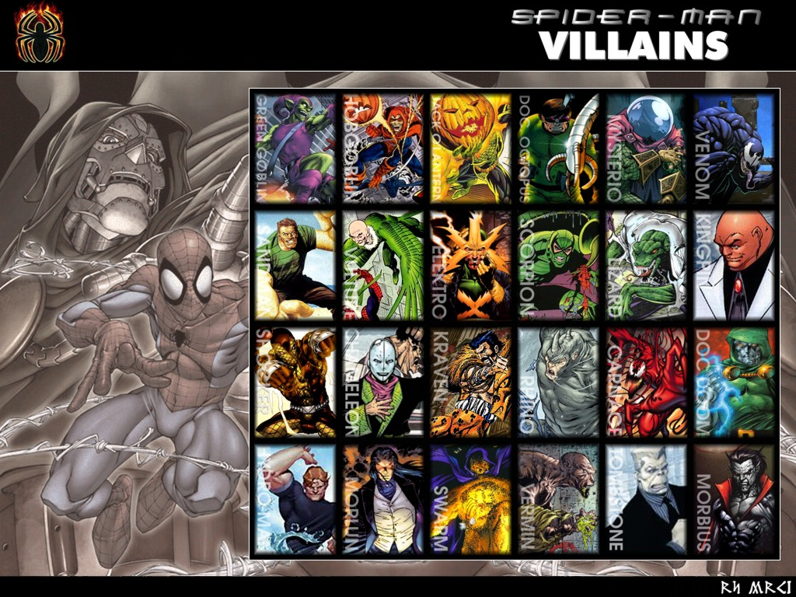

Kẻ thù
Peter Parker có lẽ là nhân vật có số lượng kẻ địch lớn nhất trong toàn bộ các siêu anh hùng. Với anh chàng người nhện thân thiện, chúng ta có những kẻ thù cực kì nổi tiếng như:
Green Goblin
Nếu như Batman có Joker, Flash có Reverse Flash thì Spiderman có Green Goblin. Là kẻ gây ra cái chết của Gwen Stacy, đe dọa sự sống của dì May và là kẻ đã khiến cuộc đời Peter luôn đau khổ, Norman Osborn là kẻ xấu hàng đầu và luôn là kẻ thù lớn nhất với Peter Parker.
Để thấy được sự ác độc của hắn, hãy nhớ rằng Norman đã khiến Gwen Stacy có thai và sinh thành một cặp song sinh rồi giết cô bằng cách ném xuống sông.
Doctor Octopus
Một thiên tài khoa học và là một người khá đặc biệt với Peter. Hầu hết thời gian đều ngồi sau cánh gà và điểu khiển các con rối để chống lại Spiderman, Octo Octavius cuối cùng cũng có cái kết đẹp cho mình ở cuối "Superior Spiderman #31" và trở thành một trong những kẻ thù đặc biệt nhất với Peter Parker.
Doctor Octopus không chỉ là một kẻ thù, kẻ xấu, hắn còn là một người bạn thân, một tri kỉ đối với Peter (sau Superior Spiderman).
Ngoài ra, Spiderman còn có vô cùng nhiều những đối thủ khác như: Scorpion, Rhino, Electro, Kraven, Sandman, Carnage, Venom, Kingpin, Lizard, Shocker, Hydroman, Morbius, Vulture, Mysterio, HobGoblin, DoubleGanger, Tombstone, The Jackle... và danh sách vẫn còn rất rất nhiều chưa kể đến những kẻ xấu liên hệ với các anh hùng khác.
